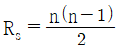
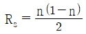
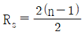
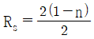
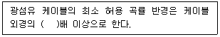
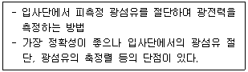
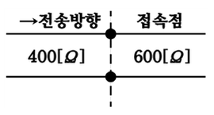
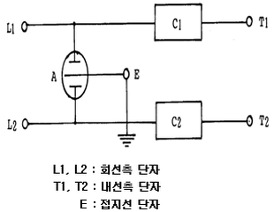

통신설비기능장 (2022-10-08 기출문제)
1과목: 임의 과목 구분(20문항)
1. 다음 중 패킷 교환망의 주요 기능으로 틀린 것은?
- 호(Call), Virtual Circuit 설정 및 해제
- 타임슬롯(Time Slot) 통화로 설정
- 혼잡제어(Congestion Control)
- 교착상태(Dead Lock) 방지
(정답률: 69%)

2. 전자교환기를 망형(Mesh Type)으로 네트워크 구성시 중계선 구하는 식은?




(정답률: 87%)
3. 전송하고자 하는 총 비트 수가 20개 일 때 해밍 비트 수는 얼마인가?
- 2비트
- 3비트
- 4비트
- 5비트
(정답률: 85%)
4. 8진 PSK의 위상차는 얼마인가?
- π
- π/2
- π/4
- π/8
(정답률: 85%)
5. PCM 통신 방식에서 신장(Expanding)이 이루어지는 단계는?
- 전송로 사이
- 양자화와 부호화 사이
- 표본화와 양자화 사이
- 복호화와 여파기 사이
(정답률: 82%)
6. 양자화 부호 길이가 8비트이면 양자화 계단수는 얼마인가?
- 64
- 128
- 256
- 512
(정답률: 89%)
7. PCM-24방식에서 1프레임시간(Tf)과 1통화로에 할당된 시간(Tc)은 얼마인가?
- Tf=120[㎲], Tc=4.2[㎲]
- Tf=125[㎲], Tc=5.2[㎲]
- Tf=130[㎲], Tc=6.2[㎲]
- Tf=135[㎲], Tc=7.2[㎲]
(정답률: 85%)
8. 비동기 전송방식의 설명으로 틀린 것은?
- 정보의 전송단위가 문자이다.
- 문자와 문자사이에 휴지시간이 있다.
- 전송성능이 좋아 효율적인 전송방식이다.
- 각 문자를 전송할 때마다 스타트비트와 스톱비트를 추가하여 비트열을 구분한다.
(정답률: 75%)
9. 다음 중 데이터 통신에서 채널의 전송용량을 늘리는 방법으로 틀린 것은?
- 채널대역폭을 넓힌다.
- 신호세력을 높인다.
- 잡음세력을 줄인다.
- 전송속도를 높인다.
(정답률: 83%)
10. 반송대역 전송방식 중 전송부호'0'일때는 위상을 180도 반전시키고, '1'일때는 위상을 변화없이 그대로 유지하는 방식은 무엇인가?
- PSK
- QPSK
- DPSK
- QAM
(정답률: 80%)
11. 무선 송신기에서 발생 되는 스퓨리어스(Spurious)복사 방지대책으로 틀린 것은?
- 종단증폭부 공진회로의 Q(선택도)를 낮게한다.
- 전력 증폭기의 여진 전압을 가급적 적게한다.
- 공중선 회로의 결합에 π형 결합회로를 사용한다.
- 전력 증폭부를 B급 Push-Pull 증폭기를 사용한다.
(정답률: 83%)
12. 수신기의 주요 성능을 나타내는 3대 요소에 속하지 않는 것은?
- 감도
- 선택도
- 충실도
- 증폭도
(정답률: 87%)
13. 다음 중 나이퀴스트(Nyquist) 표본화 주파수는? (단, fs : 표본화 주파수, fm : 신호의 최고 주파수)
- fs = 2fm
- fs＜ fm
- fs ≥ fm
- fs ≤ 3fm
(정답률: 95%)
14. 다음 중 무선 주파수를 전송하기 위한 송신용 급전선의 필요한 조건으로 볼 수 없는 것은?
- 유도 방해를 주거나 받지 않아야 한다.
- 급전선의 파동임피던스의 전송효율이 좋아야한다.
- 송신용 급전선은 절연내력이 적어야 한다.
- 가격이 저렴하고 유지보수가 용이하여야 한다.
(정답률: 89%)
15. 야기안테나의 소자 중 길이가 가장 짧고 용량성을 갖는 소자는?
- 도파기
- 투사기
- 반사기
- 흡수기
(정답률: 89%)
16. 송신국 A의 안테나의 높이는 980[m]이고, 수신국 B의 높이는 420[m]일 때 직접파가 전달될 수 있는 거리 약 몇 [km]인가?
- 185[km]
- 213[km]
- 385[km]
- 426[km]
(정답률: 80%)
17. 위성지구국에 사용되는 비선형 증폭기에 입력되는 신호의 주파수가 3.5[GHz], 4.5[GHz]일 때 출력 가능한 신호의 주파수가 아닌 것은?
- 1[GHz]
- 7[GHz]
- 8[GHz]
- 10[GHz]
(정답률: 91%)
18. 다음의 이동통신 기지국의 형태중에서 통화량이 많은 도심지역과 과밀지역 및 In-Building 지역에 설치되는 기지국의 형태는 어떤 것인가?
- OMNI
- 2 Sector
- 3 Sector
- Femto-BTS
(정답률: 83%)
19. 무선채널에서 집중에러(Burst Error)를 분산시켜 에러 정정능력을 효율적으로 유지시켜 주기 위한 것은?
- 엠퍼시스
- 인터리빙
- 핸드오버
- 부호확산
(정답률: 84%)
20. 다음 중 이동통신의 무선망 설계시 고려사항이 아닌 것은?
- 트래픽 분석
- 기지국 설계
- 전계강도 분석
- 가입자 D/B 구축
(정답률: 90%)
2과목: 임의 과목 구분(20문항)
21. 각 노드에서 데이터 송수신을 제어하기 위해 토큰(Token)을 사용하는 네트워크 토폴로지(Topology)는?
- 망형(Mesh)
- 트리형(Tree)
- 링형(Ring)
- 성형(Star)
(정답률: 86%)
22. 다음 중 IEEE 802.15 표준에 해당하는 WPAN 기술의 대표적인 것으로 틀린 것은?
- IEEE 802.15.1 Biletooth
- IEEE 802.15.3 UWB
- IEEE 802.15.4 ZigBee
- IEEE 802.15.5 WLAN
(정답률: 75%)
23. 전화통신망(PSTN) 구성요소 중 통신 채널을 상호 연결시키는 기능을 하는 것은?
- 가입자 선로 접속부
- 교환 회로망
- 교환 제어부
- 신호망 접속부
(정답률: 71%)
24. 기가(Giga) 이상의 인터넷 전송속도를 제공하기 위해서는 어떤 케이블 카테고리를 사용하는가?
- Category 3
- Category 4
- Category 5
- Category 6
(정답률: 87%)
25. 자율 네트워킹 기술에서 시스템이 문제를 스스로 판단하여 해결하는 기능은?
- self-configuration
- self-optimization
- self-healing
- self-protection
(정답률: 82%)
26. 인터넷에서 사용되는 네트워크 클래스 B에서 한 네트워크 내의 최대 호스트 수는?
- 65,534
- 254
- 1,024
- 128
(정답률: 83%)
27. 다음 중 암호화 방식인 공개키 알고리즘에 대한 설명으로 틀린 것은?
- 대표적인 암호화 방식에는 DES가 있다.
- 대표적인 암호화 방식에는 RSA가 있다.
- 암호키는 공개하고 해독키는 비밀로 한다.
- 키의 분배가 용이하고 관리해야 할 키의 개수가 적다.
(정답률: 82%)
28. 다음 중 SSO(Single Sign-On) 보안 위협에 속하지 않는 것은?
- 인증정보 노출
- 익명 로그인
- 위장(사칭) 위협
- 키관리 위협
(정답률: 83%)
29. 다음 중 시큐어 코딩의 필요성이 아닌 것은?
- 사후 대응방식의 보안 취약점 제거 비용 보다 수십 배의 비용을 절감할 수 있다.
- 사이버 공격의 대부분이 하드웨어 장비의 취약점을 악용하는 공격으로 분석되고 있다.
- 보안 취약점을 고려하여 소스코드 레벨에서 사전에 제거하여 안전한 소프트웨어를 개발한다.
- 행정기관 등에서 추진하는 40억 이상 정보화사업에는 시큐어 코딩을 의무적으로 시행해야 한다.
(정답률: 73%)
30. MAC 주소, IP 주소 등과 같은 식별 정보를 속여 다른 대상시스템을 공격하여 정보를 얻어내거나 시스템을 마비시키는 기법은 무엇인가?
- DDOS
- Spoofing
- Phraming
- Sessing Hijacking
(정답률: 80%)
31. 통신관련시설의 접지저항에 대한 설명으로 틀린 것은?
- 통신설비에 피해를 줄 우려가 있을 때에는 접지단자를 설치하여 접지한다.
- 통신관련 시설의 접지저항은 10[Ω] 이하로 한다.
- 국선수용 회선이 100회선 이상인 주배선반은 100[Ω] 이하로 할 수 있다.
- 보호기를 설치하지 않는 구내통신단자함은 100[Ω] 이하로 한다.
(정답률: 86%)
32. 다음 중 동축케이블에 대한 설명 중 바르지 않은 것은?
- TV 분배, 장거리 전화 전송, LAN, 짧은 시스템 링크 등 가장 용도가 다양한 전송 매체로 아날로그, 디지털 신호에 모두에 사용된다.
- 높은 주파수와 빠른 데이터 전송에 효과적으로 사용되므로, 광대역 전송에 부적합하다.
- 아날로그신호에서 주파수가 높을수록 증폭기의 간격이 좁아지므로 몇 [km]마다 증폭기가 필요하다.
- 디지털 전송속도가 빠를수록 리피터의 간격이 좁아져야 하므로 몇 [km]마다 리피터가 필요하다.
(정답률: 84%)
33. 다음 중 통신선로 정수에 대한 설명으로 맞지 않는 것은?
- 1차 정수에서 저항, 인덕턴스, 정전용량 등이 있다.
- 2차 정수는 전파정수, 감쇠정수, 위상정수 등이 있다.
- 1차 정수에서 병렬적 요소는 정전용량, 누설 컨덕턴스이다.
- 1차 정수에서 R, L, G의 사용 단위는 같다.
(정답률: 87%)
34. 지하관로에 케이블 인입시 통신용 케이블의 중량이 100[kg/m]이고, 마찰계수 0.5, 설치 관로의 길이가 245[m]일 때, 이 케이블 포설장력은?
- 50[kg]
- 122[kg]
- 4,900[kg]
- 12,250[kg]
(정답률: 71%)
35. 다음 보기에서 빈 칸에 알맞은 숫자는?

- 5
- 10
- 20
- 30
(정답률: 79%)
36. 가입자 망에서 각 가정까지 광섬유케이블을 포설한 통신방식은 무엇이라고 하는가?
- VDSL
- BcN
- ISDN
- FTTH
(정답률: 91%)
37. 광파이버를 굴절률 분포에 따라 분류할 때 다음 중에서 해당하지 않은 것은?
- Step Index Fiber
- Saw Index Fiber
- Graded Index Fiber
- Triangular Index Fiber
(정답률: 89%)
38. 다음 보기에서 제시한 광섬유 특성 측정법은 무엇인가?

- 삽입법
- 컷백법
- 주파수 영역법
- 반사손실 측정법
(정답률: 93%)
39. 다음 그림과 같이 임피던스가 각각 400[Ω], 600[Ω]을 갖는 접속점에서의 반사계수는?

- 0.2
- 0.3
- 0.4
- 0.5
(정답률: 75%)
40. 단상 전파 정류기의 DC출력 전력은 단상 반파 정류기 DC출력 전력의 몇 배인가?
- 같다.
- 2배
- 3배
- 4배
(정답률: 87%)
3과목: 임의 과목 구분(20문항)
41. 다음 중 전기통신설비에 대한 접지저항 측정법으로 맞지 않는 것은?
- 콜라우시 브리지법
- 비헤르트 브리지법
- 레벨 미터법
- 지멘스 접지 저항계법
(정답률: 85%)
42. 다음 중 LTE 서비스를 위한 주파수 대역으로 사용되지 않는 주파수는?
- 900[MHz] 대역
- 1.7[GHz] 대역
- 2.1[GHz] 대역
- 700[MHz] 대역
(정답률: 83%)
43. 주파수가 5[MHz]의 전파에 사용하는 λ/4수직접지 안테나의 길이는?
- 5[m]
- 10[m]
- 15[m]
- 20[m]
(정답률: 80%)
44. LTE 신호에서 상향과 하향링크를 서로 다른 주파수로 구현한 방식은?
- FDD
- TDD
- CDM
- QPSK
(정답률: 70%)
45. 광섬유케이블을 A방향에서 B방향으로 측정한 접속손실 값이 0.⑤[dB], B방향에서 A방향으로 측정한 접속손실 값이 0.1[dB]이었다면 이 접속지점의 평균접속손실 값은 몇 [dB] 인가?
- 0.025[dB]
- 0.⑤[dB]
- 0.075[dB]
- 0.15[dB]
(정답률: 77%)
46. 다음 중 과학기술정보통신부장관이 방송통신 전문인력을 양성하기 위한 계획을 수립·시행하도록 「방송통신발전 기본법」으로 정하는 사항이 아닌 것은?
- 전문인력 양성사업의 지원
- 전문인력 양성기관의 지원
- 전문인력 양성기관의 운영
- 방송통신기술 자격제도의 정착 및 전문인력 수급 지원
(정답률: 94%)
47. 정보통신공사업법에 따르면 방송통신시설물의 시공 품질의 적정성을 확보하기 위하여 건축물 준공 전에 설치된 구내통신설비가 기술기준 등에 적합하게 시공되었는지를 확인받는 검사는?
- 품질관리
- 사용전검사
- 검수
- 도급계약
(정답률: 90%)
48. 다음 중 용역업자가 해당 공사 전반에 관한 감리업무를 총괄하는 자를 배치하는 기준으로 정보통신 감리원의 배치기준으로 잘못된 것은?
- 총공사금액 10억원 미만의 공사 : 초급감리원 이상의 감리원
- 총공사금액 30억원 이상 70억원 미만인 공사 : 고급감리원 이상의 감리원
- 총공사금액 70억원 이상 100억원 미만인 공사 : 특급감리원
- 총공사금액 100억원 이상 공사 : 특급감리원(기술사자격을 가진 자로 한정한다.)
(정답률: 92%)
49. 다음 중 방송공동수신안테나시설에 해당되지 않는 설비는 무엇인가?
- 레벨조정기
- 신호처리기
- 분배기
- 비상발전기
(정답률: 85%)
50. 가공통신선과 특고압의 가공강전류전선을 공가하는 전주의 안전계수는 얼마 이상으로 하여야 하는가?
- 1
- 2
- 3
- 4
(정답률: 66%)
51. 다음은 보호기의 기본회로도이다. 보호기 성능에 관한 설명으로 틀린 것은?

- L1-E, L2-E 간에 직류 100[V/sec]의 상승전압을 인가할 때, 184[V]이상 280[V]이하에서 E를 통해 방전이 개시되어야 한다.
- L1-E, L2-E 간에 60[Hz], 5[A]를 15분간 인가할 때도 보호기의 발화 및 변형이 없어야 한다.
- L1-T1, L2-T2 간에 직류 150[mA]를 3시간 인가할 때, 과전류 제한소자는 즉시 동작하여야 한다.
- 회로의 'A'는 과전압방전소자, 'C1, C2'는 과전류제한소자로 동작되어야 한다.
(정답률: 80%)
52. 다음 중 홈네트워크 설비에서 감지기의 설치에 대한 설명으로 틀린 것은?
- 감지기는 화재, 가스누설, 주거침입 등 세대내의 상황을 감지하는데 필요한 기기이다.
- 가스감지기는 사용하는 가스가 LNG인 경우에는 바닥 쪽에, LPG 인 경우에는 천장 쪽에 설치하여야 한다.
- 감지기에서 수정된 상황 정보는 단지서버에 전송하여야 한다.
- 동체감지기는 유효감지반경을 고려하여 설치하여야 한다.
(정답률: 87%)
53. 다음 중 전유부분에 설치되어 세대내에서 사용되는 홈네트워크 기기들을 유·무선 네트워크로 연결하고 세대망과 단지망 혹은 통신사의 기간망을 상호접속하는 장치는?
- 원격검침시스템
- 주동출입시스템
- 홈게이트웨이
- 가스 및 개폐감지기
(정답률: 94%)
54. 이진수(Binary Number) 표현으로 “10100001”은 10진수로 얼마인가?
- 121
- 141
- 161
- 181
(정답률: 86%)
55. 다음 중 정보통신설계의 기본방향을 잘못 설명한 것은?
- 건축물의 활용 목적, 이용자의 생활환경 및 사무환경에 맞도록 설계한다.
- 건축 비용과 유지관리, 개보수 등 운용경비를 포함한 경제적 측면을 고려한다.
- 타통신과의 방해, 전자파 간섭 등 다양한 요소에 대한 대책도 고려한다.
- 효율적 예산 집행을 위해 정보통신설비의 새로운 기능 및 성능향상, 시설확장 등은 고려하지 않는다.
(정답률: 89%)
56. 다음 중 두 가지 변수 이상이 복합되어 있는 문제를 찾아내기에 좋은 표현 방법은?
- 교차분류표
- 플로우차트
- 누적분포표
- 상대도수분포표
(정답률: 76%)
57. 다음 중 계량형 관리도에 속하는 것은?
- u 관리도
- P 관리도
- X 관리도
- C 관리도
(정답률: 83%)
58. 다음 기업정보시스템에 대한 설명 중 가장 적절하지 못한 것은?
- ERP(Enterprise Resource Planning)는 회계, 설계, 생산, 자재, 영업 등의 기능을 포괄하는 전사적기업정보시스템의 개념이다.
- KMS(Knowledge Management System)는 사물에 부착된 태그를 이용하는 비접촉 무선인식 기술로써 정보를 읽고 관리하는 개념이다.
- SCM(Supply Chain Management)은 원재료의 조달부터 제품의 생산 및 배송까지 공급체인을 전체적으로 관리하는 개념이다.
- CRM(Customer Relationship Management)은 고객의 확보, 고객의 유지, 고객 충실도 확보를 목적으로 하는 통합적 고객관리의 개념이다.
(정답률: 83%)
59. 다음 중 작업시간연구의 범위에 포함되지 않는 것은?
- 스톱워치
- 마이크로모션연구
- 표준자료법
- 실적자료법
(정답률: 79%)
60. 통계적 추론을 이용하기 위하여 사람과 기계의 움직임을 순간적으로 관측하여 작업량을 측정하는 기법은?
- PTS법
- 표준자료법
- 영상분석법
- 워크샘플링법
(정답률: 65%)